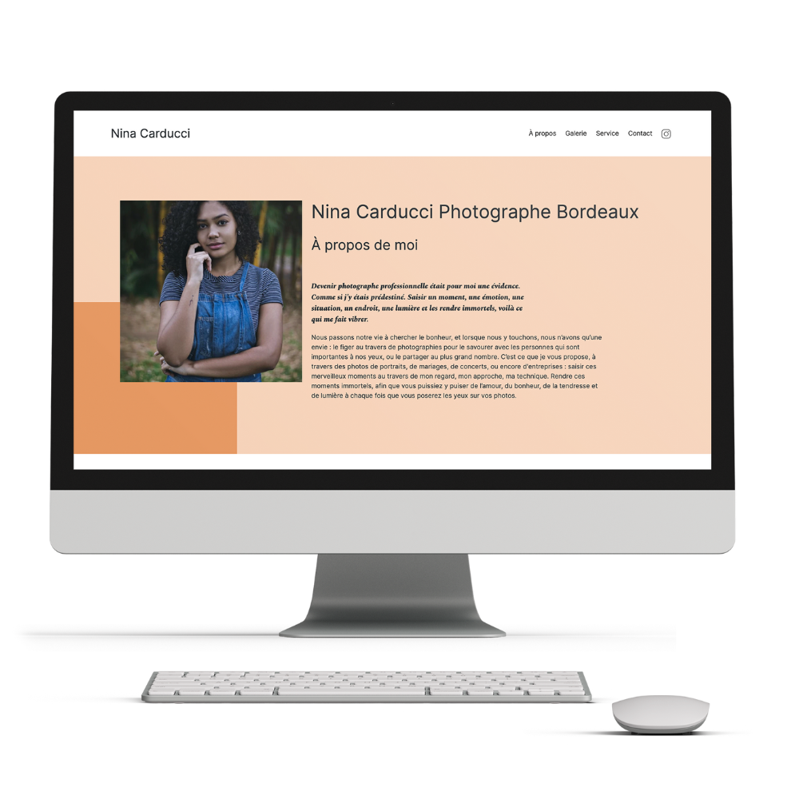

Dans ce projet, j’ai travaillé en tant que développeur freelance pour optimiser le référencement et l’accessibilité d’un site. J’ai utilisé des outils comme Lighthouse et Wave pour analyser les performances et identifier les problèmes de chargement et de SEO. Ensuite, j’ai proposé des recommandations et modifié le code du site pour améliorer la vitesse, la structure du code et le référencement. Enfin, j’ai créé un rapport avant/après, avec des captures d’écran des audits et des explications sur l’impact des changements. Ce projet m’a permis de renforcer mes compétences en SEO et en optimisation des performances web.
Technologies utilisées :
Chrome DevTools
Le défi principal était d'améliorer les performances du site sans sacrifier l'accessibilité. Le site avait des problèmes de lenteur de chargement liés à des images non optimisées et à des éléments de code mal structurés, ce qui impactait son SEO. Le travail a consisté à réorganiser le code et à optimiser les médias tout en assurant un bon référencement.
Ce projet m'a permis d'améliorer mes compétences en SEO, en optimisation des performances web, ainsi qu'en analyse de l'accessibilité avec des outils comme Lighthouse et Wave. J'ai également renforcé mes compétences en gestion de projet et en rédaction de rapports techniques.